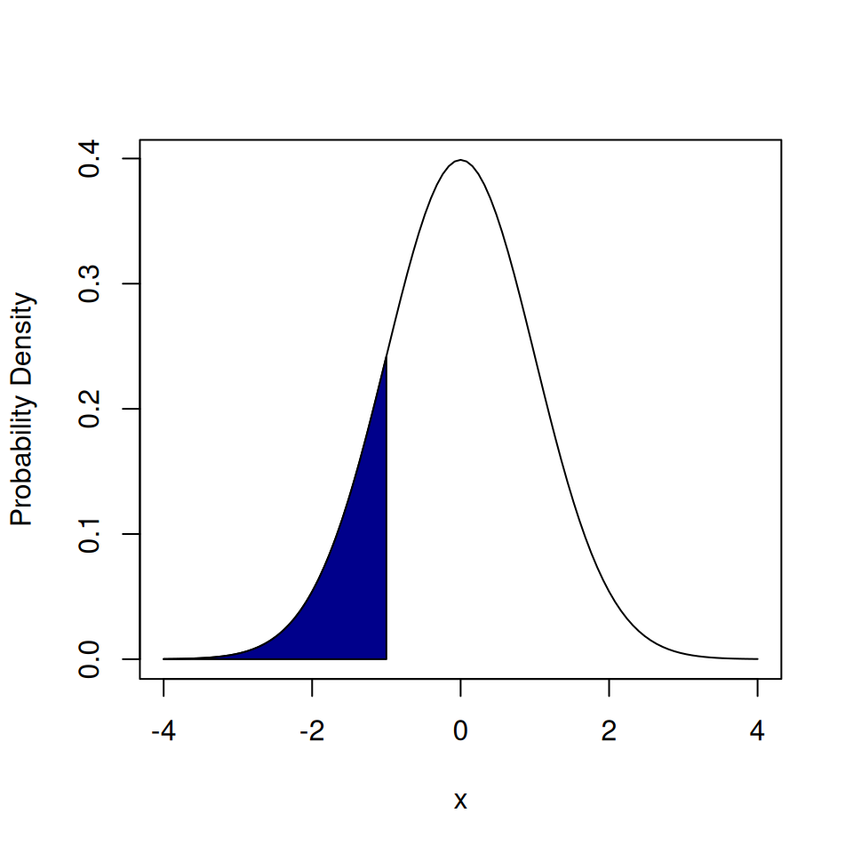

4 Programming—Practical 2
Matt Castle (mdc31@cam.ac.uk)
4.1 Random variables
A random variable can be thought of as the outcome of an experiment or a measurement i.e. something that can change each time you look at it.
Examples:
- The number of heads you obtain when tossing a coin 10 times
- The number of emails you received in one hour
- The lifetime of a light-bulb
- The length of time an individual is infected for before recovering
4.2 Probability distributions
A probability distribution will tell us the probability of a random variable taking a specific value.
A binomial distribution will be able to give us the probability of obtaining \(x\) heads if we toss a coin 10 times (where \(x\) is any number).
plot(
x = 0:10,
y = dbinom(0:10, 10, prob = 0.5),
type = "h",
main = "Binomial Probability \nMass Function",
xlab = "Number of Heads",
ylab = "Probability"
)This is an example of a discrete random variables, and so the distribution is called probability mass function.
For continuous random variables we can only calculate the probability of being in an interval.
A normal distribution gives us the probability of measurement errors, \(x\), being a certain size.
plot(
x = seq(-3, 3, length = 100),
y = dnorm(seq(-3, 3, length = 100), mean = 0, sd = 1),
type = "l",
main = "Normal Probability \nDensity Function",
xlab = "x",
ylab = "Probability Density"
)This is an example of a continuous random variable, and so the distribution is called a probability density function.
4.3 Using probability distributions in R—types
R has a large number of inbuilt probability distributions.
Discrete distributions:
- Binomial
- Geometric
- Poisson
- Negative Binomial
- Hypergeometric
- Multinomial
Continuous distributions:
- Normal
- Uniform
- T (T-test)
- F (F-test)
- Exponential
- Cauchy
- Beta
- Gamma
- Weibull
- Chi-squared
- Logistic
R deals with them all in essentially the same way. Each inbuilt distribution in R is referred to by its abbreviation.
- Binomial:
binom - Poisson:
pois - Geometric:
geom - Normal:
norm - Uniform:
unif - Exponential:
exp - \(\dots\)
Each inbuilt distribution in R has the same four generic functions associated with it.
For a distribution with abbreviation dist:
ddist(): density/mass functionpdist(): cumulative density/mass functionrdist(): random number generator functionqdist(): quantile function
4.3.1 ddist()
For a distribution type dist, the function ddist(x,...) returns:
- The probability \(P(X=x)\) (for discrete variables) or
- The probability density at \(x\) (for continuous variables)
This can be used to calculate actual probabilities for discrete distributions.
4.3.1.1 dbinom()—discrete distribution
Consider a binomial distribution with 10 trials, each with a probability of success of 0.5. The R function dbinom() describes the distribution of the probability of success.
It takes the following arguments:
x: the number of successful trialssize: the total number of trialsprob: the probability of success
## [1] 0.2050781Or to plot the distribution itself.
## [1] 0.0009765625 0.0097656250 0.0439453125 0.1171875000 0.2050781250
## [6] 0.2460937500 0.2050781250 0.1171875000 0.0439453125 0.0097656250
## [11] 0.00097656254.3.1.2 dnorm()—continuous distribution
Consider a normal distribution with mean 0 and standard deviation 1.
The R function dnorm() gives the probability density at a given value of \(x\).
It takes the following arguments:
xmeansd: standard deviation
The function dnorm(x, mean, sd) isn’t useful in itself but is useful for plotting.
With a continuous distribution we have to choose the \(x\) coordinates close enough together to approximate a smooth curve.
4.3.2 pdist()
For a distribution dist pdist(x, ...) returns the probability \(P(X\le x)\) (which in a continuous function is an actual probability).
4.3.2.1 pnorm()—probability calculations
If we want to find the probability of having a value below \(-1\) from a normal distribution we use pnorm().
## [1] 0.1586553
If we want to find the probability of having a value between \(-1\) and \(1.5\) from a normal distribution we use pnorm().
## [1] 0.77453754.3.3 rdist()
For a distribution dist rdist() returns \(n\) random numbers drawn from that distribution.
This function is of great use when trying to run stochastic models. The ability to draw random numbers from many different types of distribution is incredibly useful.
4.3.3.1 rnorm()—normal distribution
Consider a normal distribution with mean and standard deviation.
The R function rnorm() returns random numbers drawn from this distribution.
It takes the following arguments:
n: number of random numbers to returnmeansd: standard deviation
## [1] -1.43599249 -0.06877164 -1.47607343 -0.89465623 1.62928503Consider a normal distribution with mean 0 and variable 1. We will draw thousands of random numbers from this distribution and plot a histogram of them. This should then look like the theoretical normal distribution curve we produce with dnorm().
4.4 Example—using probabilities for simulation
Consider tossing a biased coin. There are two outcomes: Heads or Tails.
\(P(H) = \frac{1}{3}\) & \(P(T) = \frac{2}{3}\)
How can we use probability distributions in R to simulate this?
4.4.1 Binomial distribution
Using the binomial distribution:
- 1 observation
- 1 trial
- Probability of success (H) is \(\frac{1}{3}\)
rbinom(
1, # number of observations
1, # number of binomial trials
1/3 # binomial probability of success
)## [1] 0rbinom() returns the number of successes from our 1 observation of tossing a biased coin once.
- 0: \(\frac{2}{3}\) of the time
- 1: \(\frac{1}{3}\) of the time
We can check this by getting R to do many observations at once…
## [1] 1 0 1 0 1 1 0 0 1 0 0 1 1 0 04.4.2 Uniform distribution
Using the uniform distribution:
Generate single number uniformly between 0 and 1.
rand <- runif(
1, # number of observation
0, # minimum
1 # maximum
)
if (rand < 1/3) {
print("Heads")
} else {
print("Tails")
}## [1] "Tails"## [1] 0.6701847The shaded area corresponds to the probability of drawing Heads.
4.5 Example—multiple choices
Consider tossing a very thick biased coin. There are three outcomes: Heads, Tails, or edge.
- \(P(H) = \frac{3}{10}\)
- \(P(T) = \frac{6}{10}\)
- \(P(E) = \frac{1}{10}\)
How can we use probability distributions in R to simulate this?
rand <- runif(1, 0, 1)
if (rand < 3/10) {
print("Heads")
} else if (rand < 9/10) {
print("Tails")
} else {
print("Edge")
}## [1] "Heads"## [1] 0.1476562The blue shaded area corresponds to the probability of drawing Heads. The red shaded area corresponds to the probability of drawing Tails. The unshaded area corresponds to the probability of drawing Edge.
Consider a regular six-sided die. How could we simulate a single throw of a die in R?
- What are the possible outcomes?
- Use
runif(). - Use (lots of)
if elsestatements.
4.6 Example—using R to model a death process stochastically
Consider a population of animals. Every year each animal has a fixed probability of dying (depressing I know!), independently of each other and how old they are. There are no new animals born.
How could we model this?
- Need a program that keeps track of number of live animals.
- At each time step, we need to ‘roll a die’ to see if each live animal survives.
- We update the numbers of live animals and keep going until everything dies!
This is easy to do in R.
nAlive <- 100 # current number of live animals
max.time <- 200 # keep going for up to 200 steps
nAliveStore <- numeric(max.time+1) # vector to store how many were alive at each step
nAliveStore[1] <- nAlive # store how many were alive at the start
for (iTim in 1:max.time) { # loop over all time steps
pr <- runif(nAlive, 0, 1) # probability of dying for all currently live animals
died <- which(pr < 0.05) # find out which animals have died
nDead <- length(died) # count up how many animals have died
nAlive <- nAlive - nDead # update the number of currently living animals
nAliveStore[iTim + 1] <- nAlive # store the number of living animals
if (nAlive <= 0) {break} # stop process when all animals are dead
}
plot(nAliveStore, type = "l", xlab = "Time", ylab = "Number alive")